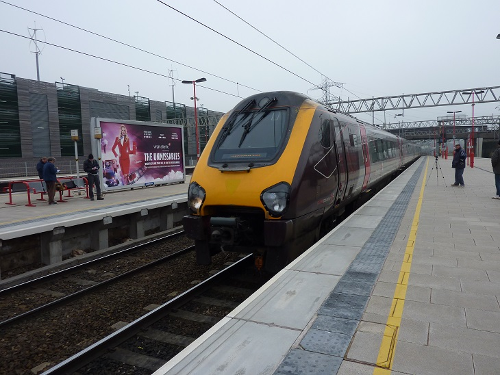

Manchester!
Vous pourrez trouver ici de nombreuses photos que nous avons prises à Manchester avec quelques commentaires!!
Premier jour
Voici le train qui nous a emmené à Manchester!
Quand nous sommes arrivés la première vue qu'on a eu était sublime: le reste de la ville était prometteur!!